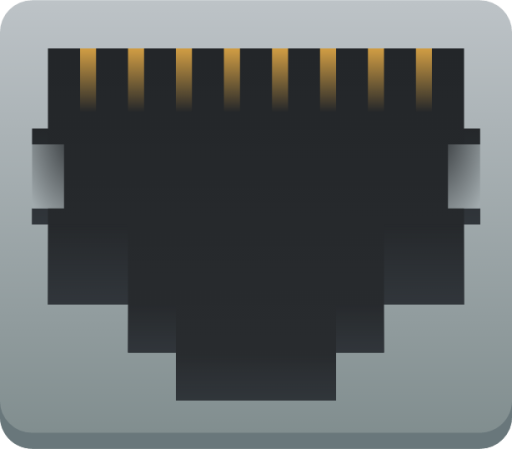

Linux SystemsRegular Arch Linux user with basic system administration knowledge.
|

Networking & InfrastructureWorking knowledge of network setup and infrastructure basics.
|
System AdministrationExperience with various system administration tasks.
|

Windows EnvironmentFamiliar with Windows system configuration and tools.
|
Development & AutomationBasic programming skills for automation and utilities.
|
Cross-Platform WorkExperience working with different operating systems.
|